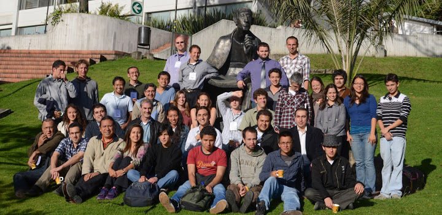
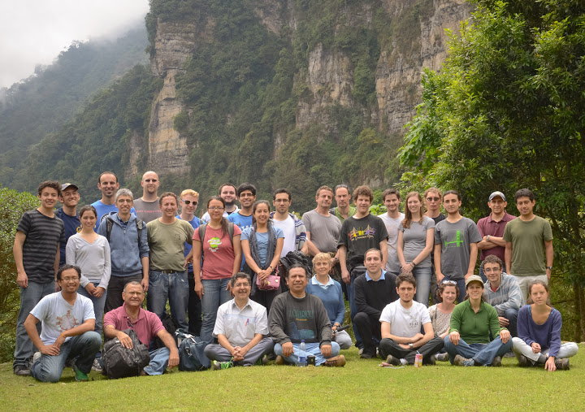
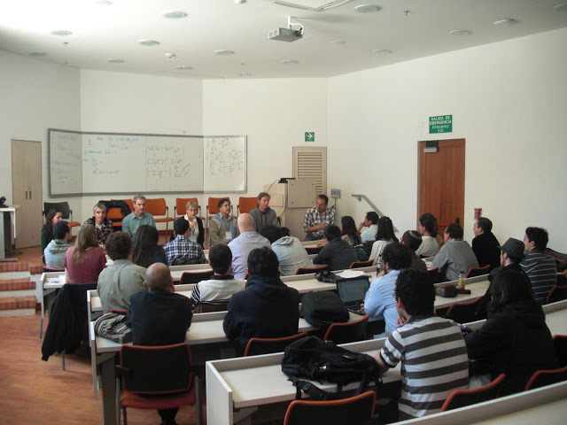

.
lo que hacemos .
what we do .
courses .
videos .
papers .
people .
ecco .
press .
|
| 
|
| 
|
| 
|
Every two years (approximately) we hold the Encuentro Colombiano de Combinatoria (ECCO), attended by students and researchers from SFSU, Colombia, and many other places. We have minicourses by international experts, problem sessions, research talks, a discussion panel, a hike or two, and a visit to one of Colombia's legendary salsa clubs. The activities are designed to give everyone opportunities to interact closely with people at all stages of the mathematical career. We do our best to build a very professional and very welcoming atmosphere. We are collaborators, and we are also a community.
Our community agreement.
Nuestro acuerdo comunitario.
ECCO 1 . March, 2003
Minicourses: Federico Ardila, Mercedes Rosas, Mark Skandera
ECCO 2 . June, 2008
Minicourses: Federico Ardila, Bernardo Uribe
ECCO 3
. June 11-22, 2012
Minicourses: Helene Barcelo, Nantel Bergeron, Alex Postnikov, Bernd Sturmfels
ECCO 4
. June 2-13, 2014
Minicourses: Lou Billera, Sara Billey, Bruce Sagan, Richard Stanley
ECCO 5
. June 13-24, 2016
Minicourses: Marcelo Aguiar, Anders Björner, Sylvie Corteel, Francisco Santos
Plenary talks: Matthias Beck, Michelle Wachs
This is also a CIMPA research school.
ECCO 6
. June 4-15, 2018
Minicourses: Vic Reiner, Rekha Thomas, Lauren Williams, Günter Ziegler
SageMath Session: Viviane Pons
Plenary Speakers: Sara Billey, Mauricio Velasco
This is also a CIMPA research school.
ECCO 7
. June 14-25 2022
Minicourses: Jesús de Loera, Caroline Klivans, Julianna Tymoczko, Josephine Yu
SageMath Session: Aram Dermenjian
Plenary Speakers: Luis Serrano, Anton Leykin
This is also a CIMPA research school.
ECCO 8
. June 17-28 2024
Minicourses: Matthias Beck, Isabella Novik, Hal Schenck, Cynthia Vinzant
Plenary Speakers: Luis Núñez, Kris Shaw
This is also a CIMPA research school.
In 2026, instead of organizing ECCO in Colombia, we are supporting the organization of the:
Escuela Combinatoria en Costa Rica
. July 27 - August 7 2026
Minicourses: Federico Ardila, Anastasia Chavez, Rosa Orellana, Emily Heath
This is also a CIMPA research school.
The Encuentros Colombianos de Combinatoria 1-4 were funded by Federico Ardila's National Science Foundation CAREER Award, Universidad de Los Andes, and San Francisco State University.
ECCO 5 was funded by CIMPA, Universidad de Antioquia, Universidad Nacional, San Francisco State University, the Fields Institute, and Banco de la Republica.
ECCO 6 was funded by CIMPA, Universidad del Norte, and San Francisco State University.
ECCO 7 was funded by CIMPA, Universidad de Los Andes, Universidad Sergio Arboleda, and San Francisco State University.
ECCO 8 was funded by CIMPA, Universidad del Cauca, Laura Escobar's National Science Foundation CAREER Award, ICETEX, LACIM, and The Combinatorics Consortium.